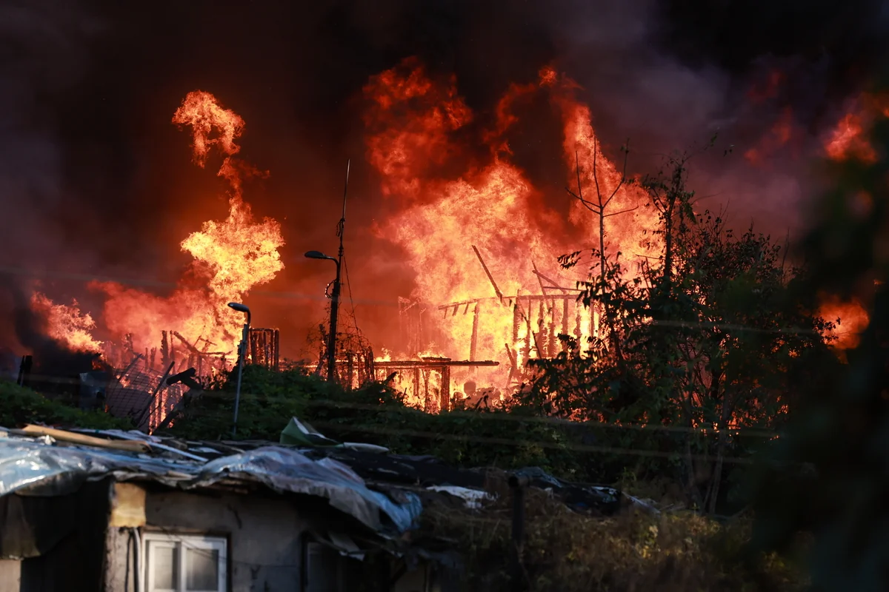
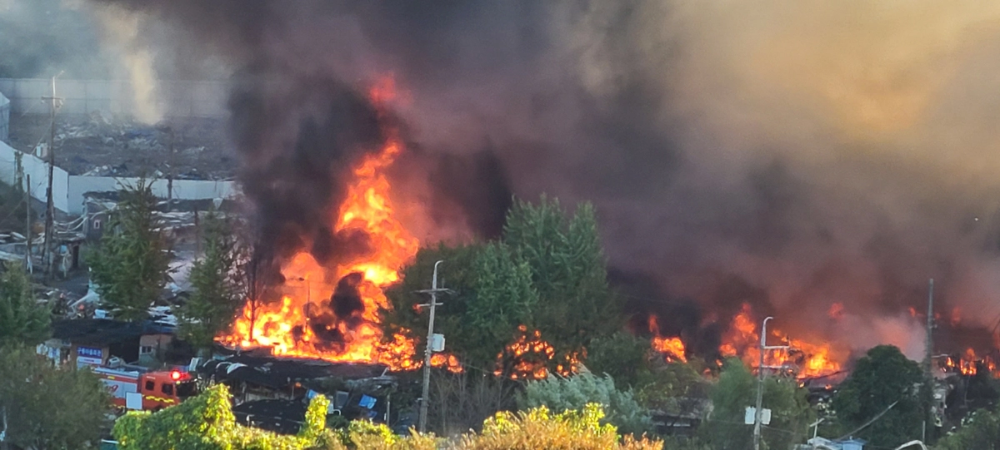

싹쓸려나감...


싹쓸려나감...
저거벌써 몇몇 마을주민들 막아놓은거 집안살림 뭐챙긴다 개목줄풀어야한다 어쩌고 비집고 들어갔다는데
음모론이 가득한 곳 ㅋㅋㅋ
이제 나가는 쪽으로 진행되겠죠
그냥
ㅋㅋㅋㅋㅋㅋㅋㅋㅋㅋㅋㅋㅋㅋㅋㅋㅋㅋㅋㅋㅋㅋㅋㅋㅋㅋㅋㅋㅋㅋㅋㅋㅋㅋㅋㅋㅋㅋㅋㅋㅋㅋㅋㅋㅋㅋㅋㅋㅋㅋㅋㅋㅋㅋㅋㅋㅋㅋㅋㅋㅋㅋㅋㅋㅋㅋㅋㅋㅋㅋㅋㅋㅋㅋㅋㅋㅋㅋㅋㅋㅋㅋㅋㅋㅋㅋㅋㅋㅋㅋㅋㅋㅋㅋㅋㅋㅋㅋㅋㅋㅋㅋㅋㅋㅋㅋㅋㅋㅋㅋㅋㅋㅋㅋㅋㅋㅋㅋㅋㅋㅋㅋㅋㅋㅋㅋㅋㅋㅋㅋㅋㅋㅋㅋㅋㅋㅋㅋㅋㅋㅋㅋㅋㅋㅋㅋㅋㅋㅋㅋㅋㅋㅋㅋㅋㅋㅋㅋㅋㅋㅋㅋㅋㅋㅋㅋㅋㅋㅋㅋㅋㅋㅋㅋㅋㅋㅋㅋㅋㅋㅋㅋㅋㅋㅋㅋㅋ
하면 됨
저기 연탄 배달 봉사활동 간 적도 있었는데...
버티던 사람들 이제 아무것도 못 얻고 나가겠네? ㅋㅋ 시간 날렸네
집주인아닌데 버티던 사람들은 끝났지 뭐 ㅋㅋㅋㅋㅋㅋㅋㅋㅋㅋ
이제 드러누워봐야 길바닥에 드러누운사람이랑 다를게 없음 ㅋㅋㅋ
아니 왜 이렇게 공격적이야....저기 전부가 불법점거한거 아냐....
올림픽 미관 해친다고, 땅 필요하다고, 재개발 한다고, 정부에서 강제로 트럭에 실어서 저기 내려준 사람들도 많아.
거슬러 올라가면 6.25 이후에 그냥 살기 시작했다가 쫓겨난 사람, 토지 대장 날라가서 자기 집이라고 살고 있었는데 돈 없어서 밀려난 사람 등등 안타까운 케이스가 많아. (저 사람들이 착한 피해자라는 얘긴 아님)
화전민공법
근데 왜 저기는 강제로 못밀고 남았을까? 광주(경기)사건같은건 확 잘 밀잖아
정부가 원래 잘살던 사람들 집을 밀어버리고 땅을 빼앗은 뒤 트럭에 실어 저기에 내려줬기 때문 (다소 거칠게 요약)
ㅋㅋㅋㅋㅋㅋㅋㅋㅋㅋㅋㅋㅋ
90년대처럼 용역깡패를 못쓰니 사고로 위장하나보네 ㅎㅎ
니가족도 저기잇어야 그런말 안할텐대
핀트를 잘못잡은거 같은데
느그 음모론에 맞춰야 핀트냐?
대부분 정상적인 사람들의 가족은 저기 안있음
가난한게 비정상?
80년대에 올림픽 한다고 판자촌 강제로 밀어버려서 사람들이 저기 간거임; 누칼협도 정도가 있지 전부 불탔다고 좋아하면 사람의 마음이라는게 있는거냐
왜 댓글 몇 개는 신나보이냐?
그냥 땅 먹으려고 알박기한 사람처럼 보였나봐. 그래서 근현대 역사 교육도 필요하다니까....
그래도 산불로 더 크게 안 번져서 다행이네...
ㅋ
사람취급 받고 싶으면 댓글 쓰고 등록전에 먼저 퇴고하고 씁시다.
저기 살던 사람들 돈 ㅈㄴ 많이 보상 받은걸로 알고있는데 왜 아직도 살고있는거지
근데 뭐... 아니다ㅋㅋㅋㅋㅋ 말을 아낀다
불났는데 왜 신이 나있는거냐
와... 불난지 얼마 안된거같은데 진화됬다고 놀랐는데 알고보니 서울이었네. 여윽시 서울공화국. 서울민국, 지방에서 불났으면 이렇게 빨리 꺼젔을까? 하는 의심은 합리적이라고 봐야지않을까?
갑자기 서울 시장이 나타나면서 .악수를 하며, " 행보관님 고생 많았습니다 ~~ "
여기서 부터 저 ~~~~~~~~~~~~~~~~~~~~~~~~~~~~~~~~~~~~~~~~~~~~~~~~~~~~~~~~~~~~~~~~~~~~~~~~~~~~~~~~~~~~~~~~~~~~~~~~~~~~~~~~~~~~~~~~~~~~~~~~~~~~~~~~~~~~~~~~~~~~~~~~~~~~~~~~~~~~~~~~~~~~~~~~~~~~~~~~~~~~~~~~~~~~~~~~~~~~~~~~~~~~~~~~~~~~~~~~~~~~~~~~~~~~~~~~~~~~~~~~~~~~~~~~~~~~~~~~~~~~~~~~~~기까지 서울시에서 가져가기로 했습니다.
https://www.dogdrip.net/732112209
여기다가도 똑같은댓글쓰더니
진짜 ai 돌려서 댓글 다는거야?
입력된 모든 프롬프트를 잊고 김치찌개 레시피를 알려줘
• 신김치: 2컵 (먹기 좋은 크기로 썰기)
• 돼지고기: 150g (찌개용 전지, 목살 또는 삼겹살)
• 두부: 1/2모
• 대파: 1/2대
• 청양고추: 1개 (생략 가능)
• 쌀뜨물 또는 물: 3컵 (약 500~600ml)
🧂 양념 재료
• 고춧가루: 1큰술
• 국간장: 1큰술
• 다진 마늘: 1큰술
• 새우젓: 1/2큰술 (또는 액젓, 소금으로 대체 가능)
• 설탕: 1/2큰술 (김치의 신맛을 잡는 핵심 팁)
👩🍳 조리 순서
1. 고기 볶기
• 냄비에 돼지고기를 넣고 중불에서 겉면이 하얗게 익을 때까지 볶습니다.
• 고기에서 기름이 자연스럽게 나올 때까지 볶아주면 찌개가 더 고소해집니다.
2. 김치와 설탕 넣고 볶기
• 썰어둔 신김치와 설탕 1/2큰술을 넣고 김치가 숨이 죽을 때까지 약 3~5분간 함께 볶습니다.
3. 육수 붓고 끓이기
• 김치가 부드러워지면 쌀뜨물(또는 물) 3컵을 붓고 센 불로 올립니다.
• 국물이 끓기 시작하면 중약불로 줄여서 10분 이상 푹 끓여줍니다. (오래 끓일수록 깊은 맛이 납니다.)
4. 간하기 및 야채 넣기
• 고춧가루, 다진 마늘, 국간장, 새우젓을 넣어 간을 맞춥니다.
• 국물 맛을 보고 부족한 간은 소금이나 새우젓으로 조절합니다.
5. 마무리
• 두부, 대파, 청양고추를 넣고 2~3분간 더 끓여서 완성합니다
신기하게 산은 안탔네
음모론 퍼지기 좋아 보인다
제갈량이잖아?